1 · 引导与排队条
“后续输入方式”原生选择框改为轻量的「引导 / 排队」图标按钮。消息条靠近输入框，右侧提供取消与更多操作；菜单解释发送方式，打开时不挤压输入框。
修改前：标签与原生下拉框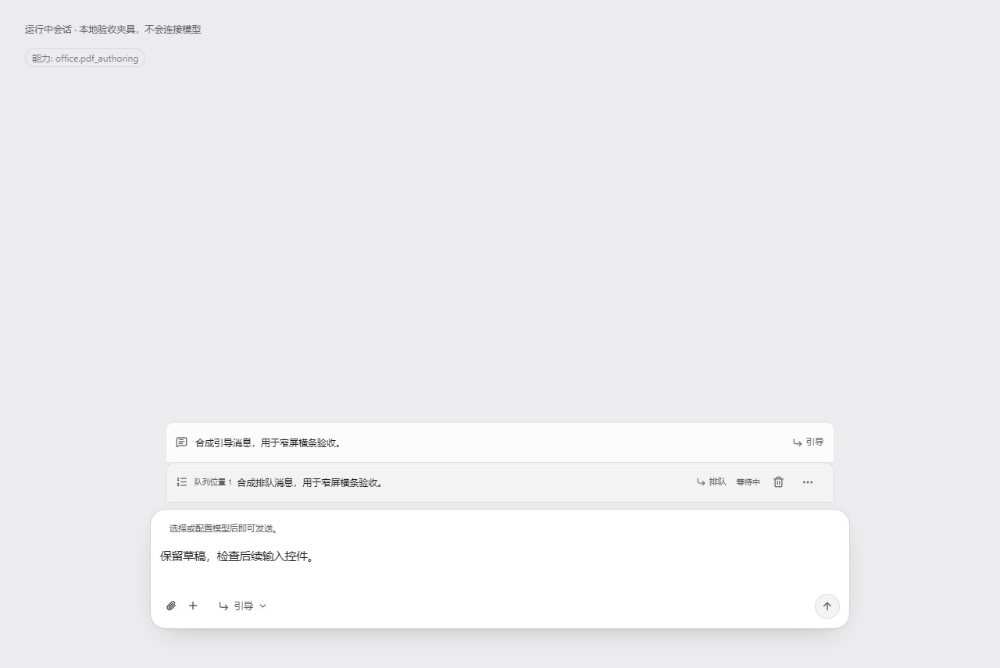
修改后：真实输入组件夹具，待处理消息位于输入框上方；顶部 office.pdf_authoring 是显式能力回归样本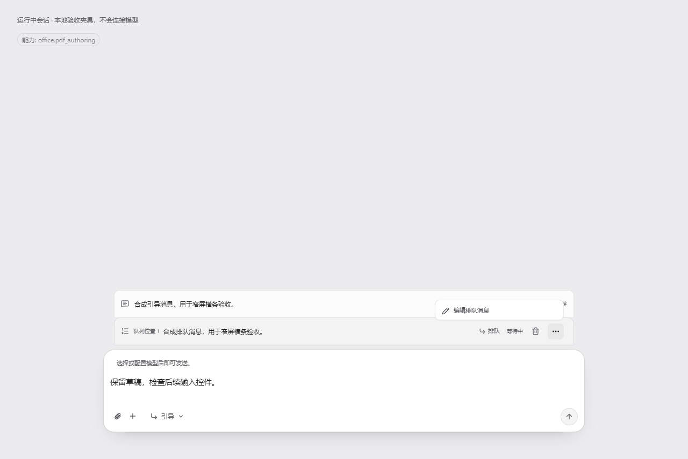
更多菜单只提供现有的撤回、发送、编辑和排序操作2 · 项目右键菜单
提供置顶、编辑显示名称、分区、资源管理器、归档聊天和移除项目。显示名称、置顶、分区和隐藏状态随完整重启保留。编辑不重命名目录，移除不删除文件或会话；归档可在归档列表恢复。
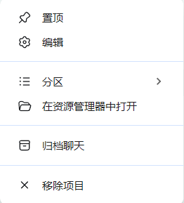
用户提供的菜单参考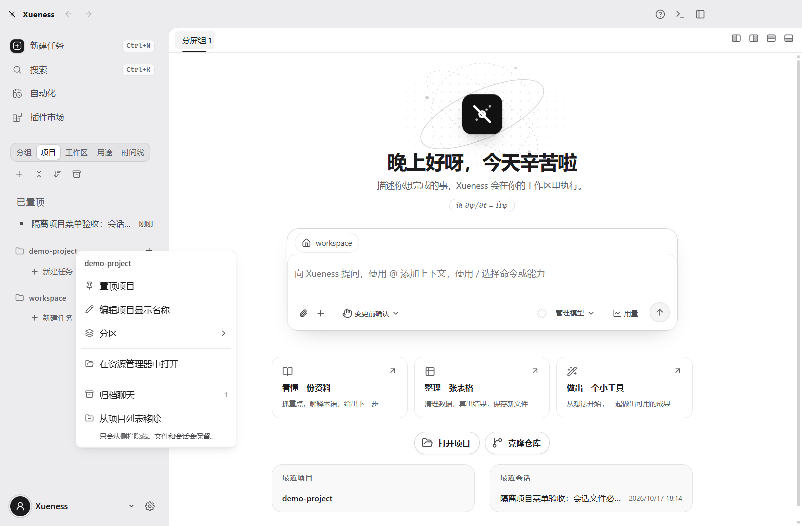
新桌面构建中的项目操作菜单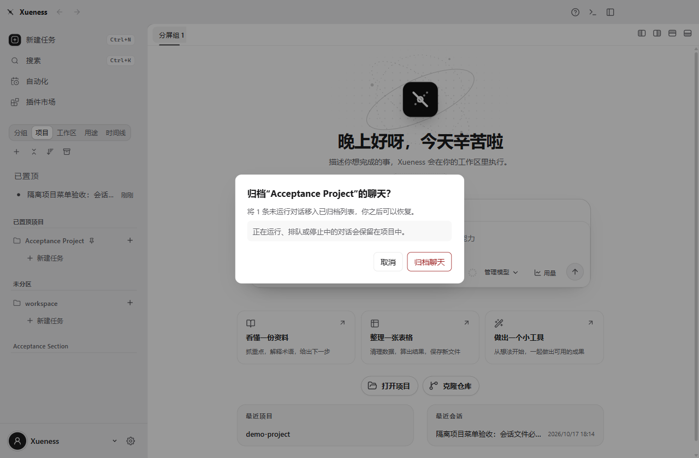
批量归档前展示实际范围，跳过运行中的会话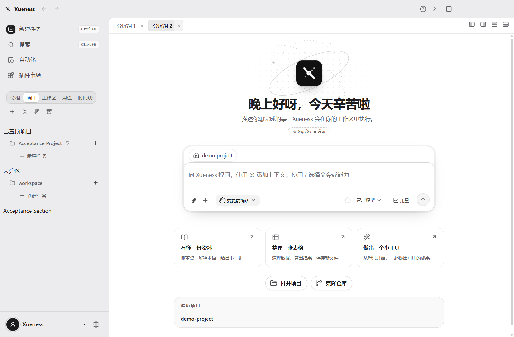
完整进程重启与重新添加项目验收3 · 模型监测页
增加页面留白、筛选栏和记录卡片之间的距离。宽窗口并排展示请求与返回型号，窄窗口纵向排列，长型号可换行。此页仍读取已有响应记录，不额外调用模型。
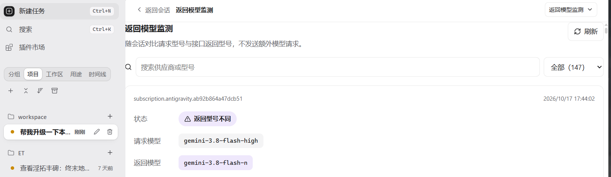
修改前：内容紧贴页面边缘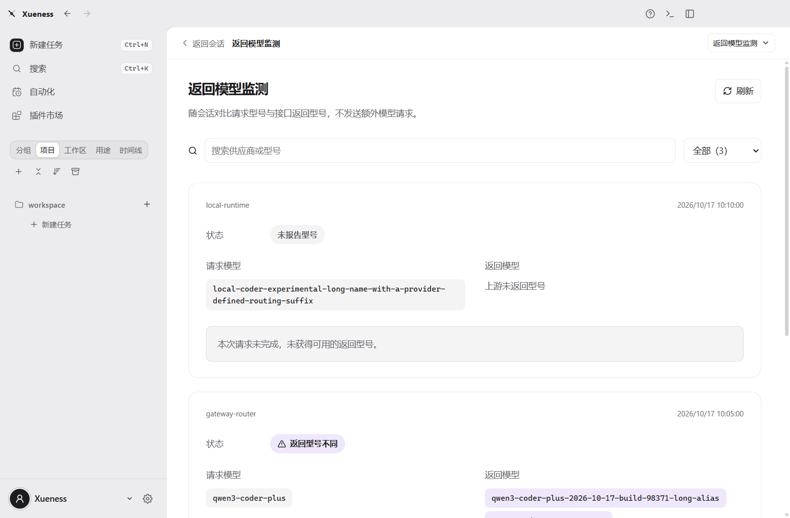
修改后：独立监测记录页，三条记录均为合成样本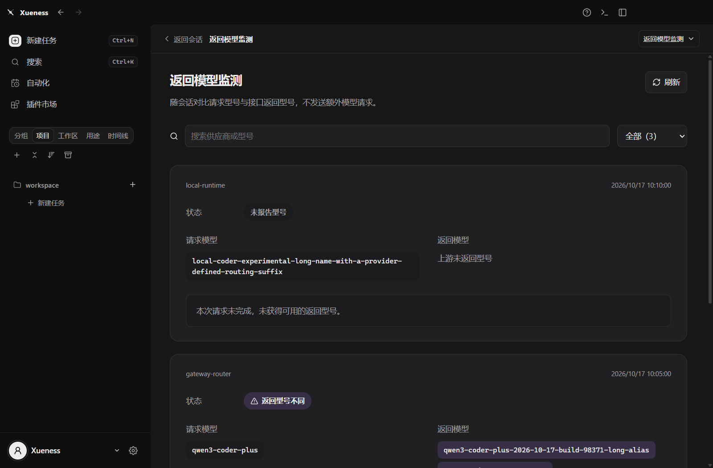
深色模式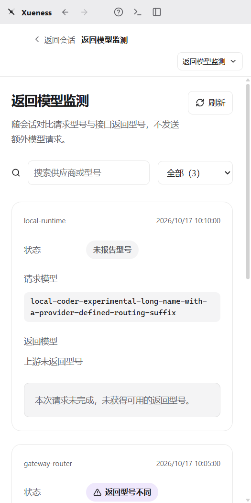
窄窗口4 · 去掉自动能力标签
image / pdf / video 是模型输入格式配置，不再作为新会话的常驻上下文标签。模型详情保留能力配置；真正选择的文件、技能和插件信息仍显示。
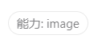
修改前：每次新会话出现的自动标签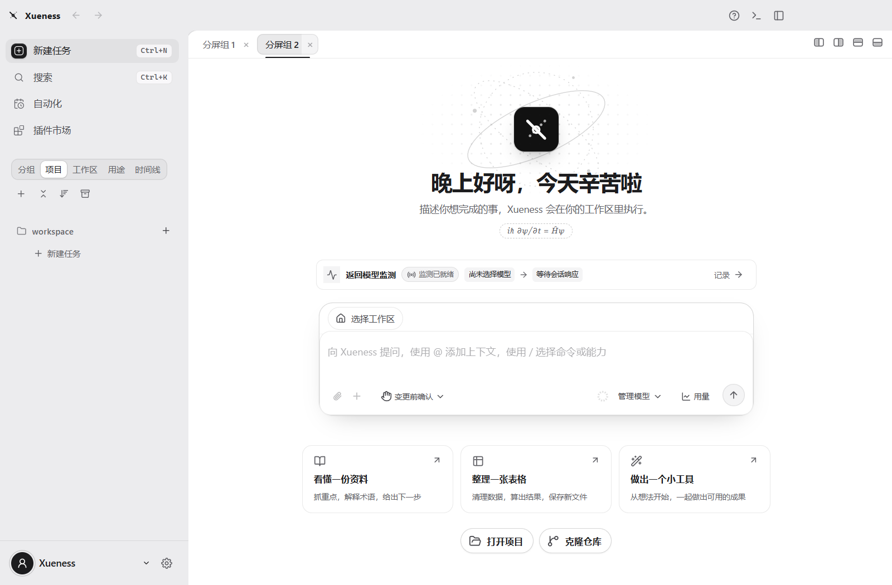
修改后：隔离桌面构建的新会话；自动媒体能力过滤另由组件回归覆盖已通过回归：自动媒体能力标签不渲染，主动选择的功能引用保留；未改变模型或附件发送逻辑。
安装与验证
- 本机已安装并启动 Xueness 0.1.8。
- 安装文件逐项核对：1927 项；安装前后保留 1485 个用户数据文件。
- 启动后核对 69 份会话与配置记录，内容保持不变；3 份文件只更新已读时间或队列运行时钟。
- 前端 1693 项测试通过；桌面 111 项通过、6 项按平台跳过；插件架构 26 项通过。类型、设计与启动包体预算检查通过。
- 项目菜单与监测页使用真实 Windows 构建和隔离数据；输入区使用真实 React 组件夹具。资源管理器验收覆盖 UI → IPC → 目录校验，系统打开函数在测试中记录目标路径。
- 本轮不发起模型请求，不以合成截图宣称真实模型效果。
备份位置：E:\models\apps\backups\xueness-before-install-20261017-bb0bdcb5